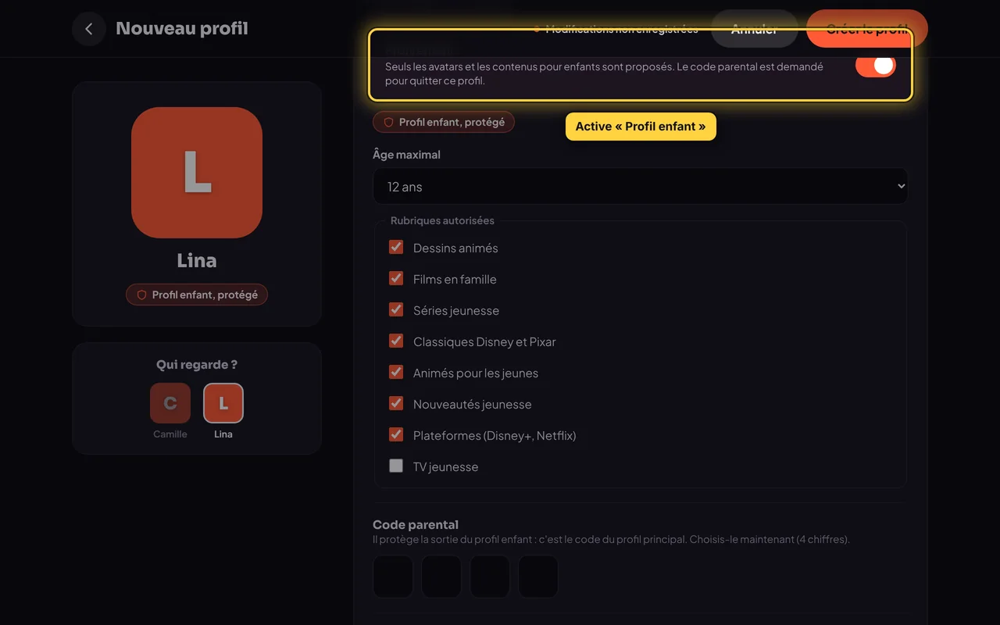
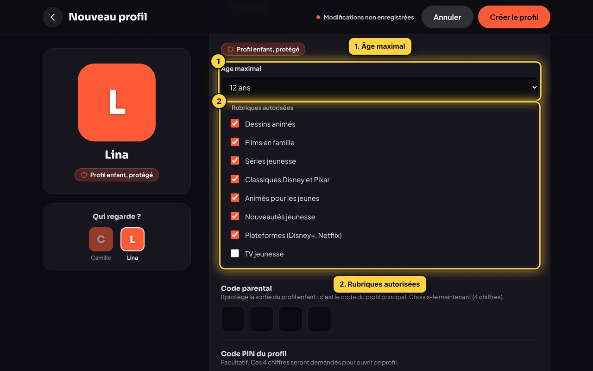

Étapes
Sur chaque capture, le cadre jaune montre où toucher ou cliquer ; les numéros donnent l’ordre.
-
Ouvre « Nouveau profil » comme dans le guide Créer un profil (avatar, « Changer de profil », « Ajouter un profil »), puis saisis son prénom.
-
Dans « Contrôle parental », active « Profil enfant ».

-
Choisis l’« Âge maximal » (1) : 10, 12, 16 ou 18 ans (12 par défaut). Coche les « Rubriques autorisées » (2), voir le tableau plus bas.

-
Si le profil principal n’a pas encore de code parental, saisis-en un de 4 chiffres (1). C’est lui qui protège la sortie du profil enfant.
Touche « Créer le profil » (2).

-
Touche « Terminé », puis le profil enfant : son accueil ne montre que des titres de son âge.

Rubriques autorisées
| Rubrique | Cochée par défaut |
|---|---|
| Dessins animés | Oui |
| Films en famille | Oui |
| Séries jeunesse | Oui |
| Classiques Disney et Pixar | Oui |
| Animés pour les jeunes | Oui |
| Nouveautés jeunesse | Oui |
| Plateformes (Disney+, Netflix) | Oui |
| TV jeunesse | Non |
Sans « TV jeunesse », l’onglet TV est masqué pour l’enfant.
Sortir du profil enfant
Touche son avatar, puis « Changer de profil » : le code parental est demandé.